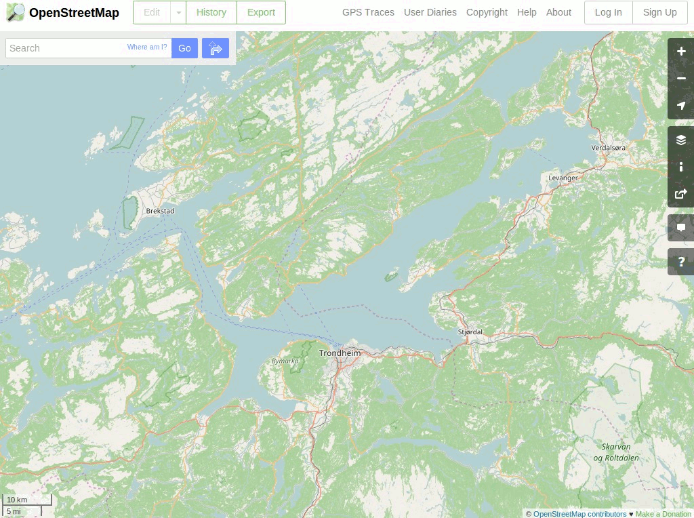

OpenStreetMap¶
Mappe¶
OpenStreetMap è una mappa a livello mondiale creata dalla comunità che è cresciuta per diventare una delle più dettagliate fonti disponibili di dati geografici a scala locale. I dati geografici sono creati e aggiornati da migliaia di volontari in tutto il mondo, tramite un procedimento simile a quello che è alla base dell’enciclopedia wikipedia.
L’aspetto tipico di OSM è l’interfaccia suddivisa in tile del sito web https://www.openstreetmap.org, ma le mappe possono anche essere visualizzate, importate, o modificate in molte altre applicazioni come ad esmpio QGIS , OpenLayers, ArcGIS e applicazioni dedicate a OSM.
Il cuore del progetto sono i dati di base che sono aperti per tutti gli utenti per la modifica, la visualizzazione o per creare rendering di mappe personalizzate. Fondamentalmente l’obiettivo di OSM sono i dati, la mappa così ricca di informazioni è generata proprio da questi.
La distribuzione di OSGeoLive include un estratto a scala cittadina dei dati OSM che vengono utilizzati come esempi da alcune applicazioni.
{kind=link}
Caratteristiche principali¶
Gli elementi vettoriali sono taggati con nomi e altri attributi.
Estrae un subset localizzato dei dati.
I dati sono memorizzati come nodi, stringhe di nodi e meta-elementi corrispondenti a punti, polilinee, copertura di aree e relazioni nel sistema di riferimento grografico WGS84 latitudine-longitudine.
Una caratterizzazione degli attributi molto ricca, spesso molto più dettagliata di ogni altra fonte.
Un deposito globale di conoscenza locale.
Data Sets inclusi in OSGeo Live¶
feature_city.osm.bz2: Un grande estratto dell’area più estesa della città come un file di testo XML compresso nel formato BZip2.
feature_city_CBD.osm.bz2: Un sottoinsieme che copre solo il distretto economico centrale (Central Business District - CBD).
feature_city_poi.db: DB di Sqlite di nodi «punti di interesse» estratto dal precedente estratto cittadino OSM più grande. Contiene la posizione di pubs, stazioni di rifornimento, ristoranti, supermarkets, etc.
I files che riportano il nome della città oggetto contengono gli stessi dati dei file sopra descritti. Le guide rapide e le overview utilizzano i nomi generici dei file in modo tale che le città esempio possano cambiare ad ogni rilascio.
I dati OSM della città oggetto sono stati importati in un database PostGIS chiamato «osm_local» usando lo strumento osm2pgsql. Il sistema di riferimento spaziale utilizzato per questo database è latitudine-longitudine con datum WGS84 (codice EPSG 4326) e può essere riproiettato su richiesta in altri sistemi di tiferimento spaziali (Spatial Reference Systems - SRS), come ad esmpio Sferico-Mercatore. L’estratto più piccolo CBD è stato caricato in un altro database PostGIS chiamato «pgrouting».
Dettagli¶
Sito web: https://www.openstreetmap.org/
Licenza: Open Data Commons Open Database License (ODbL)
Versione dei dati: Estratto live del database
Formato dati: XML
Sistema di coordinate spaziali: Latitudine-Longitudine WGS84
Supporto: https://www.openstreetmap.org/help